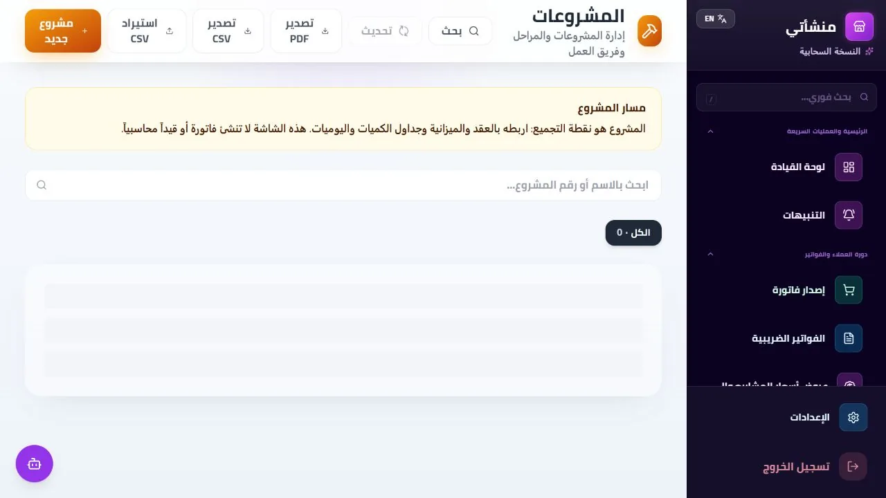

● منصة واحدة للمكتب والموقع والمالية
كل مشروع أمامك.
كل قرار في مكانه.
من العقد إلى آخر مستخلص. اجمع التشغيل والماليات في مساحة عمل يعرف فيها كل فريق خطوته التالية.
شاهد مساحة العمل ↓تجربة 30 يومًا · دون بطاقة دفع
إدارة المشروعاتمعاينة الواجهة / ENGINEX

العقد والميزانية والفريق في سياق واحد.↗ صورة فعلية من المنتج
واجهة عربية وإنجليزيةالمكتب والموقع متصلان15+ وحدة في منصة واحدة
من البيانات إلى القرارافتح مشروعك.
افتح مشروعك.
شاهد ما يحتاج انتباهك.
هذا الاتجاه يبني الصفحة حول شاشات المنتج: ينتقل الزائر بين الوحدات، ثم يرى كيف تخدم كل شاشة دوره. تأتي تفاصيل الاشتراك بعد تجربة الواجهة بصريًا.
تصور تصميمي: التبويبات تعرض صورًا حقيقية؛ لا توجد بيانات تشغيلية حية في هذه المعاينة.